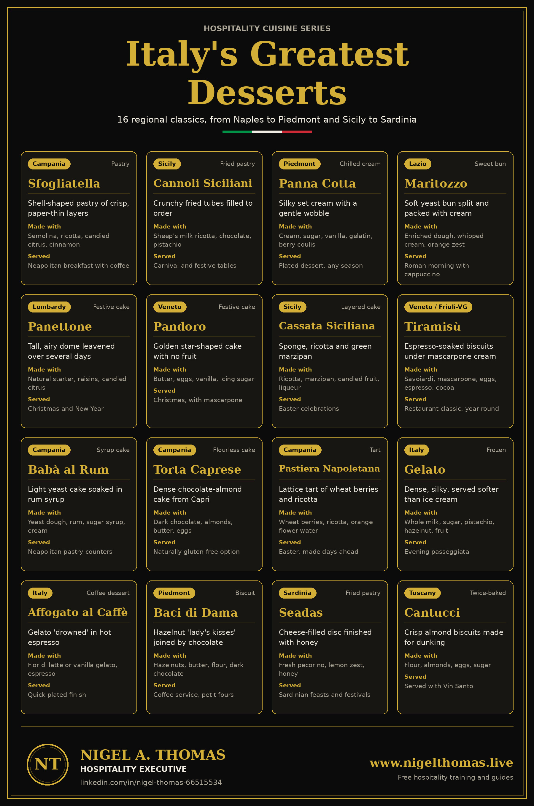

Italy's Greatest Desserts: 16 Classic Italian Sweets by Region
Sixteen classic Italian desserts, their regions, key ingredients and how to serve them well.
Introduction
Italy does not have one dessert tradition. It has dozens, shaped by geography, religion, climate and the ingredients of each region. In the south, ricotta, citrus, almonds and pistachios reflect centuries of Arab, Spanish and Norman influence. In the north, butter, cream, hazelnuts and chocolate dominate. Add the religious calendar, and you get Christmas cakes in Milan and Verona, Easter tarts in Naples and carnival pastries in Sicily. This guide covers sixteen of the most celebrated, the same sixteen shown on the free poster at the bottom of this page.
I have spent more than thirty years in hotels, resorts and cruise lines across India, the Middle East and the USA. In every one of them, a well-chosen Italian dessert has been one of the most reliable ways to finish a meal. Guests recognise the names, the stories are easy to tell, and many of the dishes are simple to execute well. For students of hospitality, these desserts are also a lesson in how provenance, seasonality and technique create value on a menu.
How Italian dessert culture works
Italian pastry culture divides into a few clear families. The pasticceria makes cakes, pastries and biscuits, often in the morning for coffee. The gelateria makes frozen desserts, usually eaten in the evening. The restaurant dolce is the formal dessert at the end of a meal, and festive cakes are tied to the calendar. Understanding these categories helps a menu planner choose desserts that suit the occasion rather than simply the season.
Another feature of Italian desserts is how often they are served with coffee or wine. Espresso is part of the dessert experience, from the affogato to the cup that accompanies a maritozzo. Sweet wines such as Vin Santo, Moscato d'Asti and Marsala are used for dipping and sipping. When you train service teams, teach the pairing along with the dessert. It lifts the guest experience and the average cheque at the same time.
16 Italian desserts you should know
Sfogliatella
The sfogliatella is the pastry most visitors to Naples remember first. Its name comes from sfoglia, a thin sheet or leaf, and the shell shape is built by stretching dough into a long sheet, brushing it with fat, rolling it tightly and shaping slices into cones. Two versions exist. The riccia has a crackling, layered crust, while the frolla uses a smooth shortcrust. Both hold a filling of cooked semolina, ricotta, sugar, candied citrus peel and cinnamon. Tradition links the pastry to a convent on the Amalfi Coast, and it reached the Neapolitan pastry shops in the early 1800s, where it has stayed a breakfast staple ever since.
Service note: Serve warm with a light dusting of icing sugar. Refresh in a hot oven rather than a microwave, which turns the layers soft.
Cannoli Siciliani
Cannoli take their name from canna, the reed around which the dough was once wrapped before frying. Today metal tubes do the job, producing a blistered, crunchy shell. The classic filling is sweetened sheep's milk ricotta folded with chocolate chips and candied orange peel, with pistachios or candied fruit pressed into the ends. The dessert belongs to Carnival season, though bakeries across Sicily now make it year round. One point matters above all: a filled cannolo softens within minutes, because the moisture in the ricotta migrates into the shell. That is why Sicilian pastry cooks fill each one only when it is ordered.
Service note: Keep shells dry and airtight, keep the ricotta cream cold, and fill to order. Pre-filled cannoli lose their crunch and their selling point.
Panna Cotta
Panna cotta means cooked cream, and the recipe is as simple as the name suggests: cream, sugar, vanilla and just enough gelatin to hold the shape. Piedmont claims it, particularly the Langhe hills known for dairy and hazelnuts. The goal is a dessert that trembles when the plate moves yet melts cleanly on the tongue. Too much gelatin gives a rubbery result, too little collapses on the plate. Chefs finish it with berry coulis, salted caramel, honey or fresh fruit, which makes it one of the most adaptable desserts on any menu. It also suits banquets, because it is made ahead and portioned in advance.
Service note: Allow at least six hours to set. Dip the mould briefly in warm water to release it, and plate straight away.
Maritozzo
In Rome, breakfast often means a cappuccino and a maritozzo: a soft, lightly sweet yeast bun split open and generously filled with whipped cream. The traditional dough is enriched with olive oil and honey and may contain raisins, pine nuts or candied orange. The name comes from marito, the Italian word for husband, because young men once gave the buns to their fiancees, sometimes with a ring hidden inside. Historically it was a Lenten treat, eaten before the Easter feast. Today it is a daily pleasure in Roman bars and a modern favourite on brunch menus around the world.
Service note: Fill to order and keep the cream below 5 degrees C (41 degrees F) until service. A dusting of icing sugar finishes it.
Panettone
Panettone is the dome-shaped Christmas cake of Milan, studded with raisins and candied orange and citron peel. Its airy crumb comes from a natural starter, the lievito madre, which is refreshed repeatedly and works the dough slowly over two to three days. That long fermentation gives the cake its aroma and its keeping quality. After baking, panettone is traditionally hung upside down to cool so that the tall structure does not collapse. Milanese legends credit a kitchen helper named Toni with the invention, but the real story is one of patient pastry craft. Artisan panettone now ships worldwide and sells at premium prices every December.
Service note: Warm a slice gently and pair it with mascarpone or a glass of Moscato d'Asti. Leftovers make an excellent bread pudding or French toast.
Pandoro
If panettone is Milan's Christmas cake, pandoro belongs to Verona. The name means golden bread, and the cake is baked in an eight-pointed star mould. Unlike panettone it contains no dried fruit, relying instead on butter, eggs and vanilla for a rich, tender, buttery crumb. It is dusted with vanilla-scented icing sugar once unmoulded, giving the look of a snow-capped mountain. A common presentation is to cut it horizontally into star-shaped slices and stack them, rotated, into a Christmas tree. The industrial version took shape in Verona in the late nineteenth century, and pandoro has been a gift-giving favourite ever since.
Service note: Serve with mascarpone cream, zabaglione or warm chocolate sauce. Pandoro is a good canvas for a seasonal dessert special.
Cassata Siciliana
Few desserts show the Arab influence on Sicily as clearly as cassata. Sponge cake is moistened with liqueur or syrup and layered with sweetened ricotta, then wrapped in pale green marzipan and iced. The top is crowned with candied fruit such as orange slices and cherries, giving the cake a jewel-like finish. It is closely tied to Easter, and traditionally pastry cooks in Palermo made it for religious festivals. Do not confuse it with cassata gelato, which is an unrelated ice cream. Cassata is rich, sweet and highly decorative, so it is usually served in small slices with coffee.
Service note: Cut with a hot, dry knife for clean slices. Declare the almond, egg, dairy and gluten content clearly to guests.
Tiramisù
Tiramisù means pick me up, a reference to the espresso and the lift it gives. Savoiardi biscuits are dipped briefly in coffee, layered with a mascarpone cream made from egg yolks and sugar, and dusted with cocoa. Both Veneto and Friuli-Venezia Giulia claim it, and most accounts place its rise in the 1960s and 1970s. It has since become the most ordered Italian dessert in restaurants worldwide. Quality depends on restraint: biscuits should be dipped quickly so they stay tender rather than soggy, and the cream should be light, not heavy. Variations with strawberries, pistachio or matcha exist, but the classic is still the benchmark.
Service note: Traditional recipes use raw eggs. Use pasteurized eggs or a gently cooked yolk base, chill for at least four to six hours and hold at 5 degrees C (41 degrees F) or below.
Babà al Rum
The babà is a small yeast cake, often mushroom shaped, soaked in rum syrup until it is tender and glossy. Neapolitan pastry cooks adopted it in the 1700s, and tradition links its origin to a Polish king who liked to moisten his dry kugelhopf with wine and spirit. In Naples it became a signature, sold in every pasticceria and served plain, split and filled with pastry cream, or topped with fruit. The balance is everything: the cake must absorb enough syrup to be juicy without falling apart. Properly made, the sponge springs back when pressed lightly and releases its syrup as you eat.
Service note: Soak in warm syrup and drain well. Because it contains alcohol, mention it on the menu for guests who avoid it.
Torta Caprese
Torta caprese comes from the island of Capri. It is a dense chocolate and almond cake made with butter, eggs and sugar, with no wheat flour at all. A popular story credits a baker who forgot the flour while making a cake for visitors in the 1920s, though bakers on the island have long made it. The result is a moist, fudgy centre under a thin crackled crust, dusted with icing sugar. Because the structure comes from ground almonds and eggs, it is naturally gluten free when made with certified ingredients. That makes it a smart choice for guests who avoid gluten but still want a proper dessert.
Service note: Serve at room temperature with cream or fresh berries. Prevent cross-contact with flour in the kitchen and flag the nuts.
Pastiera Napoletana
Pastiera is the Easter tart of Naples. A shortcrust shell is filled with cooked wheat berries, ricotta, eggs, sugar, candied citrus and orange flower water, and topped with the lattice that has become its signature. Neapolitan families traditionally bake it on Maundy Thursday or earlier, because the flavours need two or three days to settle and deepen. Folklore links the wheat to spring and rebirth, and also to the mermaid Partenope, the legendary founder of the city. The aroma of orange blossom, spice and warm pastry is instantly recognisable. It is an excellent example of a dessert that tastes better the day after it is made.
Service note: Make it ahead, rest it under refrigeration and bring it to cool room temperature before slicing.
Gelato
Gelato is not simply Italian ice cream. It uses more milk than cream, so it contains less fat, and it is churned more slowly, so it holds less air. The result is a dense, silky texture and flavours that taste more intense. It is also served at a slightly warmer temperature, roughly minus 12 to minus 14 degrees C, which keeps it soft. Classic flavours include fior di latte, stracciatella, pistachio, hazelnut and fresh lemon. As a rule of thumb, natural pistachio is muted green rather than neon, and banana is greyish rather than yellow. Gelato shops in Italy are social places, and the evening stroll with a cone is part of daily life.
Service note: Keep the display cabinet at the right temperature, scoop small and flat, and pasteurize any house-made base.
Affogato al Caffè
Affogato means drowned, and the idea could not be simpler: a scoop of fior di latte or vanilla gelato is drowned in a shot of hot espresso. The contrast between hot and cold, bitter and sweet, makes it a favourite closing course. Some restaurants add a splash of amaretto, Frangelico or other liqueur, and others add crushed biscotti or chocolate shavings. For operators it is a dessert with high margin and almost no preparation, but only if the details are right. The espresso must be freshly pulled and the gelato must be of good quality, because there is nowhere to hide.
Service note: Pour the espresso at the table in front of the guest. Chill the glass first so the gelato holds its shape.
Baci di Dama
Baci di dama means lady's kisses. Two small domes of hazelnut shortbread, often with some almond, are joined by a thin layer of dark chocolate so that they resemble a pair of lips meeting. The biscuit is associated with Tortona and the Piedmont of the Savoy court in the nineteenth century. Piedmont is famous for its hazelnuts, and the nuts give the dough its fragrance and crumbly texture. The biscuits are small, which makes them ideal for petit fours, coffee service or a tray left on a hotel room welcome table. They keep well in an airtight tin for several days.
Service note: Offer them with espresso. Label the tray for nuts, dairy and gluten.
Seadas
Seadas, also written sebadas, are Sardinia's signature dessert. A disc of dough is filled with fresh, slightly sour sheep's cheese and lemon zest, sealed, fried until golden and drizzled with honey. Traditionally the honey is bitter honey from the strawberry tree, which balances the richness. Some cooks use sugar instead. The cheese should be soft and melted, with a faint tang that cuts through the sweetness. Seadas are best eaten hot, within minutes of leaving the fryer. They appear at festivals, family feasts and the end of a shepherd's meal, and they show how the island's pastoral cheese tradition shaped its sweets.
Service note: Serve immediately and hot. Dairy and gluten are present, and the frying oil should be fresh.
Cantucci
Cantucci are the crisp almond biscuits of Tuscany, especially associated with Prato. The dough is baked in logs, sliced on the diagonal while still warm, and then baked a second time until dry and crunchy. Classic recipes use no butter, which helps them keep for weeks. They are meant for dunking, and the traditional partner is Vin Santo, the amber Tuscan dessert wine. They also pair well with espresso. A plate of cantucci and a small glass of Vin Santo is one of the simplest and most elegant ways to close a dinner, and one of the most profitable for a restaurant.
Service note: Serve three or four per guest with Vin Santo. Declare almonds, eggs and gluten.
Italian desserts by region
| Campania | Sfogliatella, Babà al Rum, Torta Caprese, Pastiera Napoletana |
| Sicily | Cannoli Siciliani, Cassata Siciliana |
| Piedmont | Panna Cotta, Baci di Dama |
| Lazio | Maritozzo |
| Lombardy | Panettone |
| Veneto | Pandoro, and Tiramisù with Friuli-Venezia Giulia |
| Tuscany | Cantucci |
| Sardinia | Seadas |
| All of Italy | Gelato, Affogato al Caffè |
Allergens and food safety
Italian desserts rely on a short list of ingredients that are also among the most common allergens: tree nuts such as almonds, hazelnuts and pistachios, eggs, milk and wheat. Cannoli, cassata, baci di dama, cantucci and torta caprese all contain nuts. Babà, tiramisù and cassata may contain alcohol. Menus should declare these clearly, and service staff should be able to answer questions without guessing. Torta caprese is gluten free by design, but only if the kitchen avoids cross-contact with flour.
Food safety needs equal attention. Ricotta, mascarpone, fresh cream and cream-filled pastries are time and temperature control for safety foods, so they should be kept at 5 degrees C (41 degrees F) or below. Tiramisù traditionally uses raw egg, which is a risk for vulnerable guests, so pasteurized eggs or a cooked base are the safer choice for commercial kitchens. Cream-filled items such as maritozzi and cannoli should be filled close to service. Label and date every prepared item, and follow your property's HACCP plan.
Building an Italian dessert menu
A balanced dessert menu rarely needs sixteen items. A good rule is to offer one light option such as panna cotta or gelato, one rich option such as tiramisù or torta caprese, one regional signature, one gluten-free choice and one dessert designed to share. Seasonal items should appear when they matter: panettone and pandoro in December, pastiera in spring, cannoli at Carnival. Petit fours such as baci di dama and cantucci add margin at coffee service because they cost little and extend the guest's stay.
Presentation and storytelling matter as much as the recipe. A server who can explain that the maritozzo is a Roman breakfast, or that the sfogliatella came from a convent kitchen, sells more desserts than one who only recites the name. Train teams to mention region, texture and a pairing in a single sentence. That is how a classic becomes a profitable menu item.
Frequently asked questions
What is the difference between panettone and pandoro?
Panettone is a tall, domed cake from Milan with candied citrus and raisins, leavened with a natural starter. Pandoro is a star-shaped cake from Verona with no fruit, made rich with butter, eggs and vanilla.
Who invented tiramisù?
Nobody can say for certain. Both Veneto and Friuli-Venezia Giulia claim it, and the recipe is generally dated to the 1960s and 1970s, which makes it a modern classic compared with most Italian desserts.
Is gelato healthier than ice cream?
Gelato usually has less fat because it uses more milk than cream, and it contains less air, so portions feel more satisfying. It is still a sweet dessert and should be treated as such.
Which Italian desserts are gluten free?
Torta caprese is naturally made without wheat flour, and gelato and panna cotta are usually gluten free as well. Always confirm the ingredients and prevent cross-contact in the kitchen.
Italian desserts reward curiosity. Each one carries a region, a season and a story, and each can be adapted for a modern menu without losing its identity. Download the free poster for your training room, kitchen office or classroom, and explore the related guides below.
